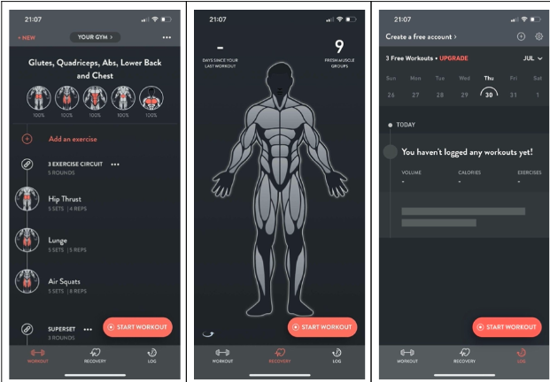
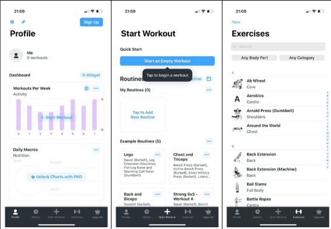
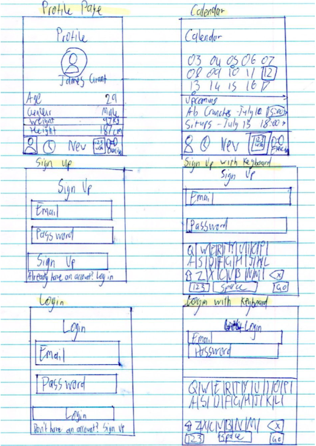
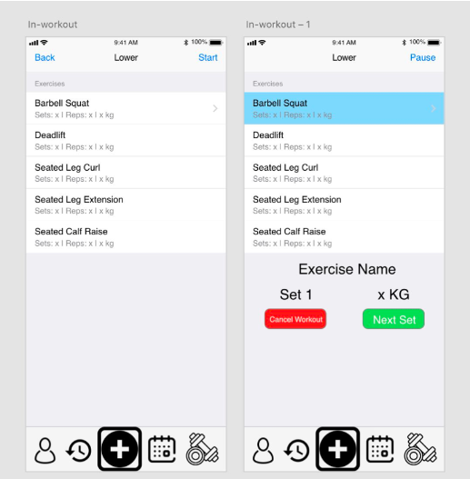
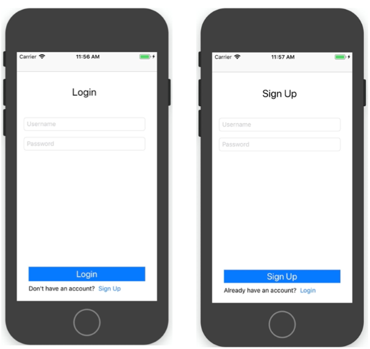
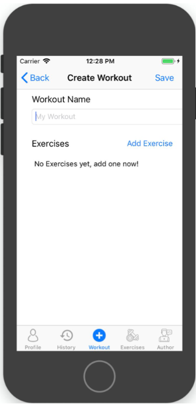
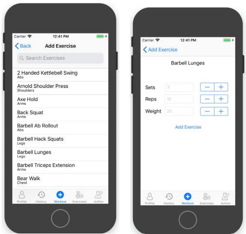
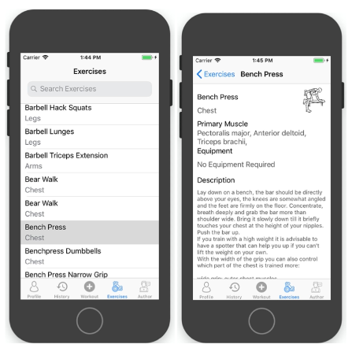
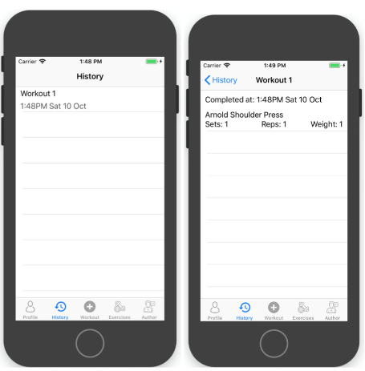

Level up
Project overview
Design problem
Level up is a fitness app that will provide users with the essential tools to train in the most efficient ways. The app will allow users to track their progress and set up programs that they can follow. The app’s goal is to provide more than just fitness functions, as it strives to motivate users through a progress system unique to the app. The progress system mimics a game-like scenario where each user has a level. Through completion of their fitness programs and daily tasks set by the app, the users can gain experience points to level up.
App statement
Main purpose
Level up is an app focused on encouraging users to exercise. Level up will perform various functions to allow all types of users to achieve their fitness goals.
Use case
Ever dreamed of being Jason Bourne or Lara Croft? Try "Level Up" to achieve your peak fitness level. We will bring you all the tools you need to achieve your dream figure, so you can train to become just like them. Be it providing you with programs or keeping track of your diet, we have a leveling system to portray your effort. The Grind never ends.
Market research
App one: Fitbod Gym & Home Workout log
Features:
- - Mini questionnaire at start of app - Asks about goals and workout experience
- - Strength focused workouts - Has support for focusing specific muscle groups with curated workouts
- - Tracks recovery days and which muscle groups are fresh
- - Allows workouts to be added manually
- - Only 3 Free Workouts allowed
- - Excellent themed UI
Fitbod has an excellent list of exercises with information on which muscle groups and equipment are required. We will incorporate a similar feature in our app using our REST API, showing detailed information on exercises.
App two: Strong Workout Tracker Gym Log
Features:
- - Nutrition information (PRO required)
- - Example exercise routines to follow
- - List of exercises to learn and record
- - Storage of custom routines for future workouts
- - Workout history showing all previous activities
- - Simple UI
- - Our app will be heavily influenced by Strong. Strong has an excellently developed workout tracking functionality, which is one of the primary purposes of our app.
- - Strong’s list of exercises is comprehensive and we have adapted this for our app.
- - Strong is excellent at tracking and recording exercises, something we aim to do in our project.
REST API
Our team integrated a REST API to retrieve exercise programs to negate the tedious work of adding them manually. Using REST API also allowed our application to gain better flexibility in using other databases and scalability as it reduces the difficulty of changes.
Example REST API Get Request Result - Chin-ups
REST API - Exercise List
{
"Id":181,
"license_author":"oliser67",
"status":"2",
"description":"Like pull-ups but with a reverse grip", "name":"Chin-ups",
"name_original":"Chin-ups",
"creation_date":"2013-07-24", "uuid":"f6c4e2fa-226d-46e8-87dc-75fc8cd628bd", "license":1,
"category":12,
"language":2,
"muscles":[1,12],
"muscles_secondary":[],
"Equipment":[6]
}
Wireframe
For this project we designed a low-fidelity prototype to create a visual design and illustrate the key elements for our application. This allowed the team to start a discussion on our vision and improvement towards the design. Furthermore, the team created a medium fidelity design for each functionality to convey tests with users in the usability and observe how they would interact with our application, which allowed the team to improve the design.
Low fidelity
Medium fidelity
Final
Figure 1.1 Login and sign up screen
Figure 1.2 Creating a new work out
Figure 1.3 Adding new exercise
Figure 1.4 Exercise index page
Figure 1.5 Workout history screen
Reflection
What went well
The team worked well in contributing towards the project till completion; there was continuous communication and discussion on improving the app. The team also kept in touch with the client to get feedback and ensure they were happy with the product.
What could have been improved
As this was under a time constraint some functionality was not implemented due to poor management. Next time we could have adopted agile methodology to ensure we prioritise tasks with higher difficulty to ensure all functions are implemented. Additionally, the design aspect was much more difficult to tackle within our time frame, and more time should have been dedicated to learning the technology.